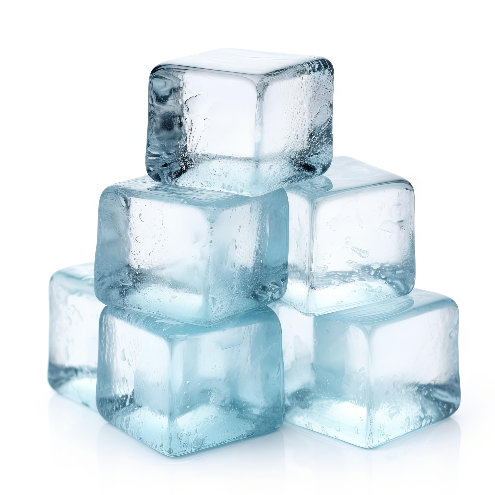

Ice Cubes

Description
Dive into the frosty world of ice cubes! This recipe transforms plain
water into delightful frozen gems that can chill your drinks and elevate
your summer vibes. Perfect for those who want to add a touch of coolness
to their beverages!
Ingredients
- Tap water
- A dash of patience
Steps
- Take the ice tray
- Place it under the water tap
- Turn the tap on
- Fill the tray with tap water
- Turn the tap off
- Go to the freezer (try not to spill the water on the way)
- Open the freezer door
- Place the tray in the freezer
- Shut the freezer door
- Wait for a few hours to make sure the water is frozen
Home